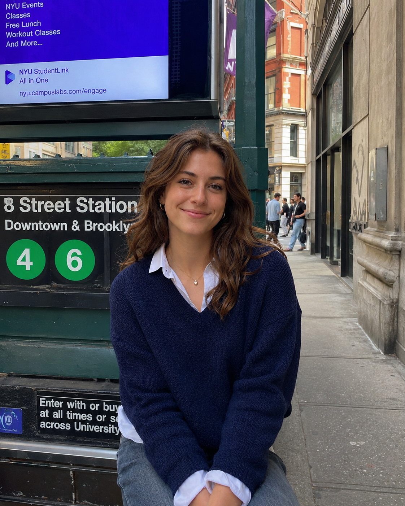

Choice increased uncertainty
Long lists provided information but still required students to compare, choose, and plan.
A portfolio shows the finished work. This book shows how the thinking was formed.

Consumer Insights · Brand Strategy · Content Strategy
Open the bookThis book explores how young people discover places, give themselves permission to pause, and decide where to share.
Across content strategy, integrated campaign development, and audience research, I examine the small tensions that shape everyday behavior: having too many choices, feeling pressure to stay productive, and managing different audiences online.
My goal is not only to show what I made, but to make the logic behind each decision visible.
Project index · 01–04
How can content give first-year students a low-pressure reason to explore local businesses?
Read chapter 02Campaign StrategyWhy do busy college students feel that breaks have to be earned?
Read chapter 03Audience ResearchWhy are young adults moving personal communication into smaller digital spaces?
Read chapter 04ReflectionWhat do these projects reveal about attention, pressure, privacy, and participation?
Read chapterContent Strategy
A content strategy helping first-year students discover independently owned neighborhood businesses.
Students did not need another list. They needed a specific, low-pressure reason to walk into one place.
How can a neighborhood business coalition help first-year students move from saving recommendations online to actually visiting local businesses?
Corner NYC, a fictional coalition of independently owned neighborhood shops, wanted to build stronger relationships with students living nearby. Students already had TikTok lists, Google Maps collections, university recommendations, and advice from friends.
The strategic problem was not awareness alone. It was action.
“I want to feel like I know my neighborhood, but I don’t know where to begin.”
Observation → evidence → meaning
Long lists provided information but still required students to compare, choose, and plan.
“A bookstore for the thirty minutes between classes” offered a clearer reason to act.
Content needed to normalize small, solo visits rather than frame every outing as a major experience.
04 / The work
A short route that can fit within one afternoon.
Situation-based recommendations connected to student moments.
Short profiles of the people behind local businesses.
Affordable experiences available for under twenty dollars.
Simple guides to what to order, where to sit, and what to expect.
Start with one block. Grab coffee here, browse for ten minutes next door, and take the long way back to your dorm.
Save this for the next time you need to leave campus without planning an entire day.Shifting the objective from discovery to activation gave every piece of content one consistent role.
Situation-based vs. neighborhood-based recommendations, one-business posts vs. three-stop routes, and direct vs. softer calls to action.
Featured Campaign
An integrated campaign encouraging busy college students to make room for short, everyday breaks.
Students did not reject taking breaks. They felt that breaks had to be earned.
Students balanced classes, internships, work, commuting, applications, and social commitments. Breaks were available in theory. In practice, they were absorbed by productivity.
“I know I need a break, but stopping makes me feel like I am falling behind.”
I helped design the survey and interview guide, compare quantitative and qualitative findings, identify the strongest audience tension, and translate it into the campaign’s primary message.
The barrier was emotional, not informational.
Students used short gaps to answer messages, review notes, or complete small tasks.
Students were more receptive to pauses that were short, specific, and easy to integrate.
Participants justified breaks only after being productive; stopping felt undeserved.
Take Twenty
You do not need to finish everything before you take a break.
Your next deadline will still be there in twenty minutes.
This bench does not need you to be productive.
You do not have to earn this break.
05 / The work
Realistic twenty-minute gaps before class, after an interview, or between a shift and the subway.
Posters near campuses, subway stations, libraries, parks, and the routes between them.
A mobile guide to public spaces within a twenty-minute walk of participating campuses.
Downloadable twenty-minute blocks students could add between classes or shifts.
Free Take Twenty spaces with seating, prompts, charging, and analog activities.
Student organizations and wellness offices making permission visible.
“Take Twenty” combined an emotional message with a specific, realistic behavior.
The visible behavior was that students were not using public spaces. The deeper barrier was that stopping felt undeserved.
Audience Research
A study of how college students divide their lives between public feeds and private digital spaces.
Young adults are not posting less because they care less. They are moving personal communication into smaller spaces.
How do college students decide what belongs on a public social feed, a Close Friends story, or a private group chat?
Lower posting frequency does not necessarily mean lower participation. Personal communication may simply be moving into smaller, more controlled spaces.
I collected 74 survey responses, conducted eight semi-structured interviews, and coded responses around audience control, privacy, judgment, context, intimacy, permanence, performance, and emotional risk.
Where people share changes what participation feels like.
Mixed audiences made every post feel like a representation of who the participant was.
Smaller audiences made unfinished, casual, emotional, and contextual content easier to share.
Replies, reactions, shared references, and conversation mattered more than presentation.
Participants limited embarrassment, misinterpretation, unwanted questions, and judgment.
Polished, socially legible content for mixed audiences. High identity pressure.
Casual, emotional, humorous, or context-dependent content for a selected audience.
Ongoing conversation, immediate reactions, inside jokes, coordination, and support.
05 / Strategic implications
Replies, saves, DMs, small communities, and private sharing can carry stronger relevance than a visible like.
Broad reach can strip away the specificity that makes content meaningful to a smaller community.
People contribute more openly when they understand who is present and how they may be interpreted.
The survey showed where students were sharing. The interviews explained why those spaces felt different.
Close Friends selection, screenshot anxiety, identity maintenance, and whether private sharing predicts stronger affinity.
People rarely need more information alone. They need a reason to act that fits the emotional and social conditions of their lives.
Marketing should not automatically add more options. It should help audiences understand which action makes sense next.
Good strategy identifies the belief underneath a behavior rather than speaking only to the surface-level symptom.
People communicate differently depending on who they believe is listening and how much shared context is present.
A message can receive attention and still fail to create action. Strategy must understand pressure, safety, and realistic effort.
My strategic process
What is the audience doing—or avoiding?
What do they want, and what makes it difficult?
Is the visible behavior evidence of something deeper?
Explain the decision in language a creative team can use.
Create a clearer, easier, or more meaningful next action.
Make each choice visible all the way back to the research.
I care about how an idea is communicated—not only whether it is correct. A strong presentation should make the logic easy to follow and the next decision easy to make.
“The strategist’s role is to understand the moment when an audience hesitates—and turn that hesitation into a useful direction.”
Finding the tension, clarifying the insight, and turning it into action.Selected source archive
Corner NYC course assignment and brand scenario.
University guides, discovery accounts, and student recommendation content.
Audience profile, voice guide, calendar, scripts, and launch plan.
62 survey responses and six semi-structured interviews.
Themes related to stress, time, guilt, and public-space use.
Messaging, outdoor, social, experiential, and digital tools.
Survey, interview guide, and participant recruitment plan.
74 survey responses and eight interview transcripts.
Audience, privacy, context, intimacy, and emotional-risk themes.
Private and anonymized materials are described here but are not publicly linked. Presentation decks can be downloaded within each chapter.
I’m looking for summer 2027 internships and early-career opportunities in brand marketing, consumer insights, content strategy, and social media.